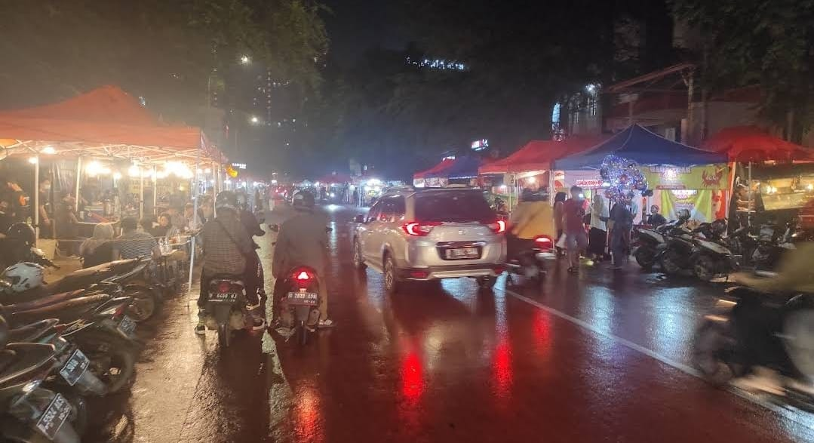
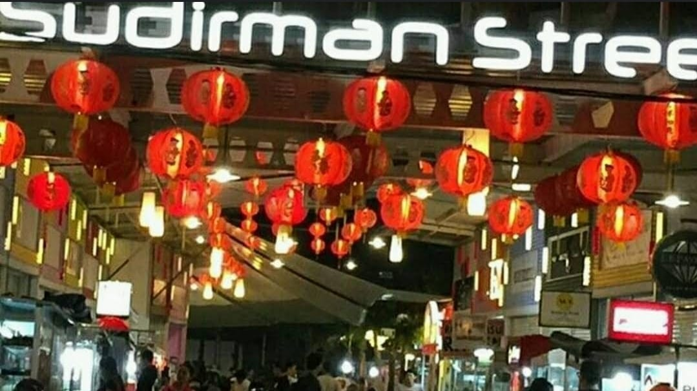
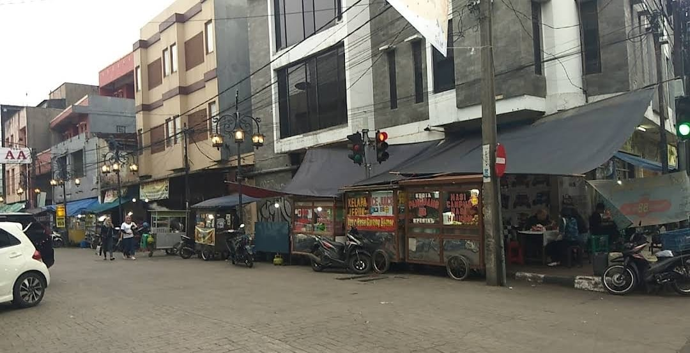

List Tempat Street Food
(っ＾▿＾)💨
1. LENGKONG NIGHT STREET FOOD

Sumber: Lengkong Night Street Food
- Buka dari jam 18.00 - 23.59
- Japanese Pan&Cake, Baby Crab, Suki & Grill, Dimsum, dll
- Jl. Lengkong Kecil, Paledang, Kec. Lengkong, Kota Bandung, Jawa Barat 40261
2. SUDIRMAN STREET DAY AND NIGHT

Sumber: Sudirman Street Day and Night
- Buka dari jam 10.00 - 22.00
- Ramen, Takoyaki, Dimsum, Nasi Campur, Sate, dll
- Jl. Jend. Sudirman No.107, Karanganyar, Kec. Astanaanyar, Kota Bandung, Jawa Barat 40241
3. CIBADAK FOOD STREET

Sumber: Cibadak Food Street
- Buka dari jam 17.00 - 23.59
- Ronde, Swike, Bola Ubi, Pisang Keju, Baso Tahu, dll
- Jl. Cibadak No.130-110, Karanganyar, Kec. Astanaanyar, Kota Bandung, Jawa Barat 40241